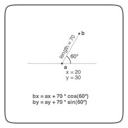

More often than not, your PlotDevice scripts will involve at least a bit of mathematics. Things like fluid motion, orbitting behavior and easing in and out all require math formulas. Since most of us probably weren’t paying any attention during math class, this document explains some useful math techniques.
Geometry
Sometimes you have the location of two points and you want to know the angle between them.
Or the distance. Or you have the coordinates of one point and want to know the location of
the second point based on an angle and a distance. The following math commands might be of
help. You can also find the basics about sines and cosines below.
The angle between two points:
def angle(x0, y0, x1, y1):
from math import degrees, atan2
a = degrees( atan2(y1-y0, x1-x0) )
return a
The distance between two points:
def distance(x0, y0, x1, y1):
from math import sqrt, pow
return sqrt(pow(x1-x0, 2) + pow(y1-y0, 2))
The location of a point based on angle and distance:
def coordinates(x0, y0, distance, angle):
from math import radians, sin, cos
x1 = x0 + cos(radians(angle)) * distance
y1 = y0 + sin(radians(angle)) * distance
return x1, y1
The reflection of a point through an origin point:
def reflect(x0, y0, x1, y1, d=1.0, a=180):
d *= distance(x0, y0, x1, y1)
a += angle(x0, y0, x1, y1)
x, y = coordinates(x0, y0, d, a)
return x, y
To use fast, C-based versions of these commands in your script, you can import them from the plotdevice module:
from plotdevice.lib.geometry import angle, distance, coordinates, reflect
Or, more conveniently, you can use methods of the same names provided by the Point and Curve classes. For example:

|
The direction from the center of random points.
r = 2.0
origin = Point(WIDTH/2, HEIGHT/2)
for i in range(5):
pt = Point(random(WIDTH),
random(HEIGHT))
arc(pt.x, pt.y, r)
a = origin.angle(pt)
with transform(CORNER):
translate(origin.x, origin.y)
rotate(-a)
arrow(30, 0, 10)
|

|
Orbiting around an origin point.
r = 2.0
origin = Point(WIDTH/2, HEIGHT/2)
oval(origin.x-r, origin.y-r, r*2, r*2)
for i in range(10):
a = 36*i
pt = origin.coordinates(85, a)
arc(pt.x, pt.y, r)
line(origin.x, origin.y, pt.x, pt.y)
|

|
Perpendicular lines on a circle path.
path = oval(100, 100, 105, 105)
for t in range(50):
curve = path.point(t/50.0)
a = curve.angle(curve.ctrl2)
with transform(CORNER):
translate(curve.x, curve.y)
rotate(-a+90) # rotate by 90°
line(0, 0, 35, 0)
|
Angle measurements
As you may remember from trigonometry, there are two commonly used systems for expressing the size of angles. In day-to-day life we're most likey to encounter ‘degrees’ ranging from 0 to 360. In mathematics it's more traditional to use ‘radians’ ranging from 0 to 2π. PlotDevice recognizes that different situations may call for different angle units and provides some utilities to make switching between them easy.
A number of commands take an angle as one of the arguments. By default, you're expected to use degrees. But by calling the geometry() command with DEGREES, RADIANS, or PERCENT you can switch between modes on the fly.
Any subsequent call to a drawing or transformation command that deals with angles will then deal in the newly-specified units. The angle() and coordinates() methods discussed above also obey the geometry() setting – both for interpreting arguments and providing return values.
 |
with stroke(0), nofill():
arc(50,25, 25, range=180)
geometry(RADIANS)
arc(50,50, 25, range=pi)
geometry(PERCENT)
arc(50,75, 25, range=.5)
|
To make working with radians more convenient, PlotDevice provides a pair of global constants – pi and tau – representing a half- and full-circle respectively.
Sequences
Sometimes you want to give a position and/or size to objects in such a way that they interrelate to each other, that there is some kind of ordering or harmony between them. Sine waves for example are great to describe motion because they ease in and out. Another interesting proportional principle is the golden ratio, the 3-5-8 rule. It has been around in aesthetics for a long long time. The great thing about it is that it can be expressed as a mathematical series (Fibonacci sequence).
def fib(n):
if n == 0: return 0
if n == 1: return 1
if n >= 2: return fib(n-1) + fib(n-2)
def goldenratio(n, f=4):
# Returns two proportional numbers whose sum is n.
f = max(1, min(f, 10))
n /= float(fib(f+2))
return n*fib(f+1), n*fib(f)
Colored rectangles proportioned with the golden ratio:

|
w1, w2 = goldenratio(260) h1, h2 = goldenratio(260) b1, b2 = goldenratio(1.0) b3, b4 = goldenratio(b1) fill(0, b1/2, b1) rect(0, 0, w1, h1) fill(0, b2/2, b2) rect(w1, 0, w2, h1) fill(0, b4/2, b4) rect(0, h1, w1+w2, h2) |

|
x, y = 0, 0
w, h = 260, 260
th = h # top height
bh = 0 # bottom height
for i in range(10):
th, bh = goldenratio(th)
v = float(th)/w + 0.3
fill(0, v/2, v)
rect(x, y, w, th)
y += th
th = bh
|
Trigonometry
A sine calculates the vertical offset between two points based on the angle. A cosine calculates the horizontal distance.

|
Let’s say we have two points, a and b, connected by a line. |

|
Now let’s assume a is at the origin (or center) of a circle. The circle has a radius equal to the length of the line connecting a and b. So b is located somewhere on the circle’s circumference. |

|
There is a horizontal and vertical distance between a and b. We can use sine and cosine to determine those distances. |

|
Each line from a to a point on the circle’s circumference (for example, b) has an angle. Measured counterclockwise, starting from 0°, a circle has a total circumference of 360°. So a line from a going straight up would have an angle of 90°. In the case of the line between a and b, the angle is 60°. |

|
The cosine function calculates the horizontal distance between a and b based on the angle. The sine function calculates the vertical distance between a and b. In the case of an angle of 60°, the sine yields 0.5. So the horizontal distance between a and b is half the length of the line between a and b. |

|
With sine and cosine we can calculate the distance between a and b. This is useful if we have position coordinates for a and we need to calculate the position of a point b that is orbiting around it. For 60°, the sine yields 0.5, meaning half the length of the distance between a and b. So the horizontal distance between a and b is 70 * 0.5 = 35. So b’s x equals a’s x plus 35. |
|  |
The command in PlotDevice would look like this:
def coordinates(x0, y0, distance, angle):
from math import radians, sin, cos
angle = radians(angle)
x1 = x0 + cos(angle) * distance
y1 = y0 + sin(angle) * distance
return x1, y1
|